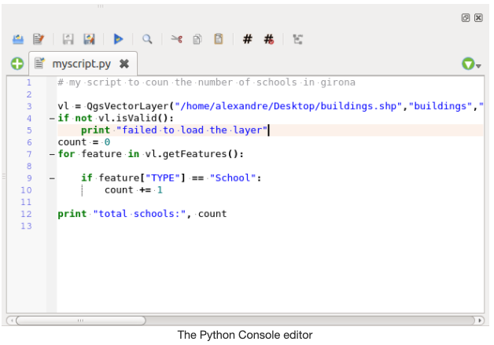

Open Source Tools¶
The Open Source Geospatial Foundation¶
From osgeo.org: “The Open Source Geospatial Foundation (OSGeo) is a not-for-profit organization whose mission is to foster global adoption of open geospatial technology by being an inclusive software foundation devoted to an open philosophy and participatory community driven development.”
QGIS¶
From qgis.org: “QGIS is a professional GIS application that is built on top of and proud to be itself Free and Open Source Software (FOSS). It is a tool kit and ecosystem composed of different services and functionalities. It can also be extended with plugins written in Python.”
Download QGIS: https://qgis.org/en/site/index.html
Resources for getting started:
The QGIS Python console¶
From qgistutorials.com: “QGIS provides a built-in console where you can type python commands and get the result. This console is a great way to learn scripting and also to do quick data processing. Open the Python Console by going to Plugins ‣ Python Console.
The QGIS Python Console is an interactive shell for the python command executions. It also has a python file editor that allows you to edit and save your python scripts. Both console and editor are based on PyQScintilla2 package. To open the console go to Plugins ‣ Python Console (Ctrl+Alt+P). Execute code snippets from the input area by typing and pressing Enter or Run Command.”
The Code Editor¶
From anitagraser.com: The Python QGIS Code Editor “allows editing and saving Python files and offers advanced functionalities to manage your code (comment and uncomment code, check syntax, share the code via codepad.org and much more).
The interactive Python console immediately executes code we input once we press Enter. Since we are planning to write more than one line of code in this example (two actually), it will be convenient to use the built-in code editor instead of the interactive console. It’s basically a text editor that lets you work on multiple lines of code until you’re happy and want to execute it all at once.”

GRASS GIS¶
From grass.osgeo.org: “Commonly referred to as GRASS (Geographic Resources Analysis Support System), it is a FOSS-GIS software suite used for geospatial data management and analysis, image processing, graphics and maps production, spatial modeling, and visualization. GRASS GIS is currently used in academic and commercial settings around the world, as well as by many governmental agencies and environmental consulting companies. It is a founding member of the Open Source Geospatial Foundation (OSGeo). GRASS GIS can be installed along with and made accessible within QGIS 3.”
GDAL¶
From gdal.org: “GDAL is a translator library for raster and vector geospatial data formats that is released under an X/MIT style Open Source License by the Open Source Geospatial Foundation. As a library, it presents a single raster abstract data model and single vector abstract data model to the calling application for all supported formats. It also comes with a variety of useful command line utilities for data translation and processing.” It is a multiplatform set of tools for translating between geospatial data formats. It can also handle reprojection and a variety of geoprocessing tasks. GDAL is built in to many applications both FOSS and commercial, including GRASS and QGIS.
SAGA-GIS¶
From SAGA-GIS.org: “SAGA, or “System for Automated Geoscientific Analyses”, is a Free and Open Source (FOSS) GIS application developed by a small team of researchers from the Dept. of Physical Geography, Göttingen, and the Dept. of Physical Geography, Hamburg. SAGA has been designed for an easy and effective implementation of spatial algorithms, offers a comprehensive, growing set of geoscientific methods, provides an easily approachable user interface with many visualisation options, and runs under Windows and Linux operating systems. Like GRASS GIS, it can also be installed and made accessible in QGIS3.
SAGA is a Free Open Source Software (FOSS), which generally means that you have the freedom:
to run the program, for any purpose,
to study how the program works and to modify it,
to redistribute copies,
to improve the program, and release the improvements to the public.”
PostgreSQL¶
From postgresql.org:”PostgreSQL is a powerful, open source object-relational database system with over 30 years of active development that has earned it a strong reputation for reliability, feature robustness, and performance. PostgreSQL comes with many features aimed to help developers build applications, administrators to protect data integrity and build fault-tolerant environments, and help you manage your data no matter how big or small the dataset. In addition to being free and open source, PostgreSQL is highly extensible. For example, you can define your own data types, build out custom functions, even write code from different programming languages without recompiling your database!”
Download PostgreSQL: https://www.postgresql.org/
PostGIS¶
From postgis.net/: “PostGIS is a geospatial extension to the PostGreSQL relational database. It adds support for geographic objects allowing location queries to be run in SQL. PostGIS adds extra types (geometry, geography, raster and others) to the PostgreSQL database. It also adds functions, operators, and index enhancements that apply to these spatial types. These additional functions, operators, index bindings and types augment the power of the core PostgreSQL DBMS, making it a fast, feature-plenty, and robust spatial database management system.” See the PostGIS Feature List for more information.
Download PostGIS: https://postgis.net/
Resources for getting started:
Python¶
From python.org: “Python is a programming language that lets you work more quickly and integrate your systems more effectively. Python is powerful and fast, plays well with others, runs everywhere, is friendly & easy to learn and is Open Source. Python can be easy to pick up whether you’re a first time programmer or you’re experienced with other languages. The community hosts conferences and meetups, collaborates on code, and much more.”
Anaconda¶
Anaconda is an all-in-one installer for Python, Jupyter Notebooks, and libraries common to scientific data analysis, and is a free tool used to simplify package management and deployment. From anaconda.com: “It is a toolkit that equips you to work with thousands of open-source packages and libraries.” It also makes it easy to create and launch virtual environments to manage libraries per project and avoid conflicts in dependencies. If you install Anaconda, you don’t need to also install Python - it will come with the latest version.
Install Anaconda: https://www.anaconda.com/products/individual (scroll to bottom)
Resources for getting started:
Jupyter Notebook + Jupyter Lab¶
From jupyter.org: “The Jupyter Notebook is an open-source web application that allows you to create and share documents that contain live code, equations, visualizations and narrative text. Uses include: data cleaning and transformation, numerical simulation, statistical modeling, data visualization, machine learning, and much more.
JupyterLab is a web-based interactive development environment for Jupyter notebooks, code, and data. JupyterLab is flexible: configure and arrange the user interface to support a wide range of workflows in data science, scientific computing, and machine learning.”
Download Jupyter products: https://jupyter.org/install
Resources for getting started:
R¶
From r-project.org: “R is a language and environment for statistical computing and graphics. R provides a wide variety of statistical (linear and nonlinear modelling, classical statistical tests, time-series analysis, classification, clustering, …) and graphical techniques, and is highly extensible. One of R’s strengths is the ease with which well-designed publication-quality plots can be produced, including mathematical symbols and formulae where needed.
R is available as Free Software under the terms of the Free Software Foundation’s GNU General Public License in source code form. It compiles and runs on a wide variety of UNIX platforms and similar systems (including FreeBSD and Linux), Windows and MacOS.”
Download R: https://mirror.lyrahosting.com/CRAN/ (Netherlands mirror)
Resources for getting started:
RStudio¶
From rstudio.com: “RStudio is a [free] integrated development environment (IDE) for R. It includes a console, syntax-highlighting editor that supports direct code execution, as well as tools for plotting, history, debugging and workspace management.”
Download RStudio: https://rstudio.com/products/rstudio/ (RStudio Desktop Recommended)
Git¶
From git-scm.com: “Git is a free and open source distributed version control system designed to handle everything from small to very large projects with speed and efficiency. Git is easy to learn and has a tiny footprint with lightning fast performance.”
Git is by far the most widely-used version control system (VCS) in the world. From atlassian.com: “Having a distributed architecture, Git is an example of a DVCS (hence Distributed Version Control System). Rather than have only one single place for the full version history of the software as is common in once-popular version control systems like CVS or Subversion (also known as SVN), in Git, every developer’s working copy of the code is also a repository that can contain the full history of all changes.”
Download Git: https://git-scm.com/downloads
Resources for getting started:
GitHub¶
From guides.github.com: “GitHub is a code hosting platform for version control and collaboration. It lets you and others work together on projects from anywhere. GitHub essential features for social coding include repositories, branches, commits, and Pull Requests. GitHub’s Pull Request workflow is a popular way to create and review code.”
Resources for getting started:
Data Version Control (DVC)¶
Download DVC: From dvc.org: “Data Version Control is a new type of data versioning, workflow, and experiment management software, that builds upon Git (although it can work stand-alone). DVC reduces the gap between established engineering tool sets and data science needs, allowing users to take advantage of new features while reusing existing skills and intuition.”
Resources for getting started:
Questions?¶
The Stack Exchange family is a collection of forums where software users can post questions and find information about the tools they are using. In particular, Stack Overflow has a wealth of information about using programming languages like Python and R, and there is a GIS Stack Exchange site as well for more specific GIS-related questions.